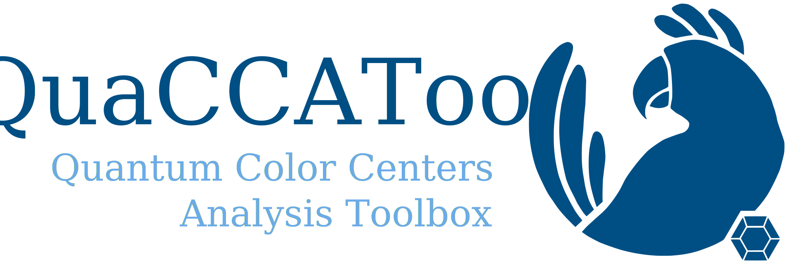

QuaCCAToo: Quantum Color Centers Analysis Toolbox
QuaCCAToo is a Python library for simulating and analyzing spin dynamics of color centers for quantum technology applications. The systems’ time evolution under pulsed experiments are calculated through quantum master equations based on the provided Hamiltonian, with realistic pulses in the laboratory frame. The software is built on top of QuTip, inheriting its object-oriented framework and the Qobj class. This way, the software provides accessibility from the high level of abstraction and human-readability of Python, but at the expense of limited performance compared to compiled programming languages.
If you used QuaCCAToo in your work, please cite arXiv:2507.18759.
The documentation for QuaCCAToo is available here. Merge requests welcome at the Github repository !
To see usage examples, check the tutorial notebooks linked here. They contain:
01 - Rabi and Hahn of a Spin Half System: simplest two-level system, where we first define the system and plot the energy levels. Following that, a Rabi oscillation is simulated for two different pulse vectors, with the results being fitted and plotted in the Bloch sphere. Lastly, we simulated a Hahn echo decay for a modeled collapse operator.
02 - Ramsey and PODMR with NV: simulation of nitrogen vacancy centers in diamond, first calculating the energy levels, then performing Rabi and comparing with experimental data. Ramsey and PODMR are also simulated.
03 - Conditional Gates with NV-13C: conditional gates with resonant MW and RF pulses of an NV center strongly coupled to a 13C nuclear spin from Observation of Coherent Oscillation of a Single Nuclear Spin and Realization of a Two-Qubit Conditional Quantum Gate.
04 - Sensing and Control of 13C Spin with NV: dynamical decoupling sequences for sensing and controling coupled 13C nuclear spins from Coherent dynamics of coupled electron and nuclear spin qubits in diamond and Detection and control of individual nuclear spins using a weakly coupled electron spin.
05 - Ambiguous Resonances in DD with NV: simulation of Ambiguous Resonances in Multipulse Quantum Sensing with Nitrogen Vacancy Centers.
06 - Teleportation Protocol with NV Pair: simulation of NV teleportation protocol in Unconditional quantum teleportation between distant solid-state quantum bits.
Class Hierarchy
QuaCCAToo is an object-oriented package organized with the following classes:
QSysdefines the quantum system of the problem. It has an obligatory intrinsic internal Hamiltonian \(H_0\), optional initial state, observable and a set of collapse operators. OnQSys, calculates the eigenstates and eigenvalues of the system and has methods for truncating the systems and adding other spins. QuaCCAToo providesNV(NV_Sys) as a predefined system for nitrogen vacancy centers in diamonds, more systems will be provided soon.PulsedSimcontains the logic for performing the simulation of pulsed experiments upon aQSysobject. It has attributes of a pulse sequence containing a set of pulses and free evolutions, control Hamiltonian \(H_1\), experiment variable and simulation results. Many predefined common pulse sequences are given inpredef_seqsandpredef_dd_seqsmodules. Different pulse shapes are predefined in thepulse_shapesmodule.ExpDatais a class to load experimental data and perform basic data processing, such as rescaling, subtracting columns or performing polynomial baseline corrections.Analysiscan be used either on simulation or experimental results, with a series of methods like for fitting (based onlmfit), Fourier transforms and data comparison. The class can also used for plotting the results in multiple forms, including density matrix histograms and Bloch spheres. Several fit models and functions relevant for analysis of color centers are provided in thefit_functionsmodule.

Contents: